| A | B | C | D | E | |
|---|---|---|---|---|---|
1 | EN | KR | |||
2 | 1. CONFIG Sheet The CONFIG sheet is used to configure the basic score template. By adjusting just two key values, you can fit the template to your Otamatone’s pitch range. · rowEnd: The row number in the ROLL sheet where your Otamatone’s lowest note is placed, and also the bottom end of the note input range. · baseMIDI: The MIDI note number of your Otamatone’s lowest note. You can search “midi note number” on Google to find it. (e.g., C4 = 60) Most of the remaining values are fixed or automatically updated, so they are not very important. Here is the list: · BPM: Default BPM at startup · stepsPerBeat: Default steps value at startup. Steps means how many subdivisions one beat is split into. · beatsPerBar: Default beats value at startup. Beats means how many beats one bar (measure) contains. · colStart: The column number in the ROLL sheet where the score starts (alphabet-to-number conversion: A=1, B=2, …). · colEnd: The column number in the ROLL sheet where the score ends (alphabet-to-number conversion: A=1, B=2, …). This value is updated automatically. · rowStart: The row number where the player starts reading data. · noteRowStart: The row number where note input begins. It is recommended to keep this as a fixed value. · extra track row, optional track row: These two tracks store their data in a single row. These fields contain the row number used for that storage. It is recommended to keep them as fixed values. Warning: If the row overlaps with the note area or is an invalid value, the layer may be disabled. | 1. CONFIG 시트 CONFIG 시트는 기본적인 악보 템플릿을 설정하는 시트입니다. 가장 중요한 두 값만 고치면 악보를 여러분의 오타마톤 음역대에 맞출 수 있습니다. · rowEnd : ROLL 시트 상에서 오타마톤 최저음이 놓이는 행이자 노트 입력 범위의 아래쪽 끝 행 번호입니다. · baseMIDI : 여러분이 가지고 계신 오타마톤 최저음의 MIDI음 번호입니다. midi note number를 구글에 검색해서 찾아보실 수 있습니다. (ex: C4=60) 나머지 값은 고정이거나, 알아서 갱신되기에 크게 중요하진 않습니다. 아래는 그 목록입니다. · BPM : 시작시 BPM 기본값 · stepsPerBeat : steps 초기 기본값. steps는 한 박자를 몇단위로 쪼갰는지를 의미합니다. · beatsPerBar : beats 초기 기본값. beats는 한 마디를 몇 박자로 쪼갰는지를 의미합니다. · colStart : ROLL시트 상에서 악보가 시작되는 열의 번호 (알파벳 순서를 숫자로 환산 : A=1, B=2, …). · colEnd : ROLL시트 상에서 악보가 끝나는 열의 번호 (알파벳 순서를 숫자로 환산 : A=1, B=2, …). 자동 갱신됩니다. · rowStart : 플레이어가 읽어들이기 시작하는 행의 번호 · noteRowStart : 노트가 입력되기 시작하는 행의 번호. 이 값은 고정값으로 두시기를 권장합니다. · extra track row, optional track row : 이 두 트랙은 그 데이터가 단일 행에 저장됩니다. 그 단일 행의 번호가 기록되어 있습니다. 고정값으로 두시기를 권장합니다. 노트 영역과 겹치거나 유효하지 않은 값이면 레이어가 비활성화 될 수 있으니 주의. | |||
3 | 2. ROLL Sheet The ROLL sheet is the main sheet where you enter score data. You can also adjust the template (pitch range & spacing) by changing the row height and the number of rows. [Score Data] ① Song Info Area : A space to enter information such as the song title, artist, genre, and the score creator. If you fill in a YouTube link cell and an offset cell, you can use YouTube Mode in the Otamatone Player described later. ② Label Area : A space on the left side of the ROLL sheet where you write the functions / note names (solfège) assigned to each row. ③ Score Area : The area where the actual score data is stored. [Adjusting the Pitch Range] 1) The current template is based on the creator’s Otamatone, with a highest note of C#6 and a lowest note of E3. If your Otamatone has a different range, you can modify the template accordingly. 1-1) If your range is wider, insert n rows below E3 (row 83) in the Score Area (based on the default template) to extend the score range. 1-2) If your range is narrower, you can either leave it as is or delete rows from the bottom to match your Otamatone. 2) Update the note names written in the Label Area to match the changed pitch range. 3) Update the CONFIG sheet to match the modified template. Refer to the CONFIG sheet guide above—typically you only need to change rowEnd and baseMIDI. [Adjusting the Note Spacing] 1) In the Score Area, the dark gray rows between note-assigned rows are called “gap rows”. They exist to represent the spacing between notes. 2) Measure the spacing of your Otamatone in semitone steps, then adjust the row height of each “gap row” to match the real spacing ratio. Note: For precise calculation, keep in mind that you should also account for the thickness (height) of the note rows themselves. | 2. ROLL 시트 ROLL 시트는 악보 데이터를 입력하는 메인 시트이며, 행 높이/행 수를 조절해서 템플릿(음역대 & 간격)도 맞출 수 있습니다. [악보 데이터] ① 곡 정보 영역 : 곡명, 아티스트, 장르, 악보 제작자 등의 정보를 입력하는 공간입니다. 유튜브 링크와 offset을 채우면 후술할 Otamatone Player에서 유튜브 모드를 사용하실 수 있습니다. ② 라벨 영역 : ROLL 시트의 좌측에 존재하는 행에 할당된 기능/계이름을 적어놓은 공간입니다. ③ 악보 영역 : 실제 악보 데이터가 저장되는 공간입니다. [음역대 맞추기] 1) 현재 악보는 제작자의 오타마톤 기준인 최고음 C#6, 최저음 E3에 맞춰져 있습니다. 오타마톤의 음역대가 다르시다면 그에 맞게 수정 가능합니다. 1-1) 음역대가 더 넓은 경우 악보 영역의 (기본 템플릿 기준) E3(83행)의 하단에 행을 n개 삽입하여 악보 범위를 확장합니다. 1-2) 음역대가 더 좁은 경우 취향에 따라 그대로 두거나 하단부터 행을 삭제하여 자신의 오타마톤과 일치시킵니다. 2) 라벨 영역에 적힌 음이름을 변화한 음역대에 맞게 수정합니다. 3) CONFIG 시트의 값을 변화한 악보 템플릿에 맞게 수정합니다. 위의 CONFIG 시트 안내문을 참고하여 rowEnd, baseMIDI 값만 수정하시면 됩니다. [음 간격 맞추기] 1) 악보 영역에서 노트가 할당된 행들 사이의 진회색 행은 "갭 행"으로, 음 사이의 간격을 표현하기 위해 존재하는 행입니다. 2) 여러분이 가지고 계신 오타마톤의 음 간격을 반음 단위로 측정한 후, 각각의 "갭 행"의 행 높이를 조절해서 실제 비율에 맞게끔 간격을 조절합니다. 정확히 계산하고자 한다면 노트 행 자체의 두께도 반영해서 계산해야 함에 유의하세요. | |||
4 | 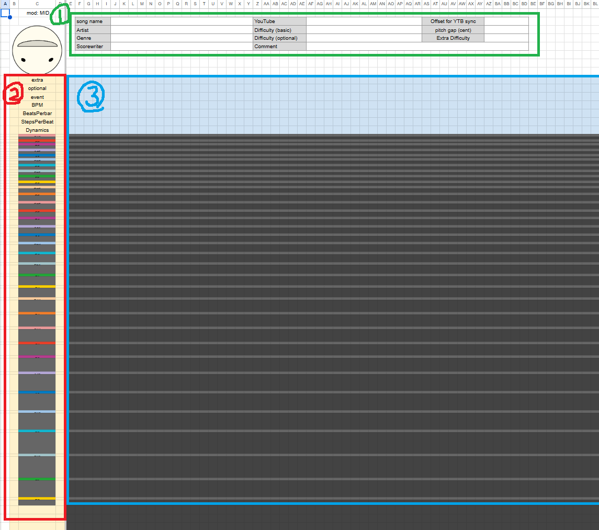 | ||||
5 | 3. PLAYER Sheet The PLAYER sheet is the gateway to the program that plays and edits your score. Click the BIG RED Otamatone Button in this sheet to launch “Otamatone Player.” The player reads data from this spreadsheet to visualize, play, and edit the piano-roll score. To apply edits back to the sheet, it may request permission to access and modify this spreadsheet. Follow the screenshots below. | 3. PLAYER 시트 PLAYER 시트는 악보의 재생 및 수정을 담당하는 프로그램을 실행하는 시트입니다. 시트 내부의 크고 빨간 오타마톤 버튼을 클릭하면 "Otamatone Player"가 실행됩니다. 이 플레이어는 시트의 정보를 읽어 피아노롤 악보를 시각화/재생/편집하며, 편집 내용을 시트에 반영하기 위해 이 스프레드시트의 수정 권한을 요구합니다. 아래 사진을 따라 진행하세요. | |||
6 | 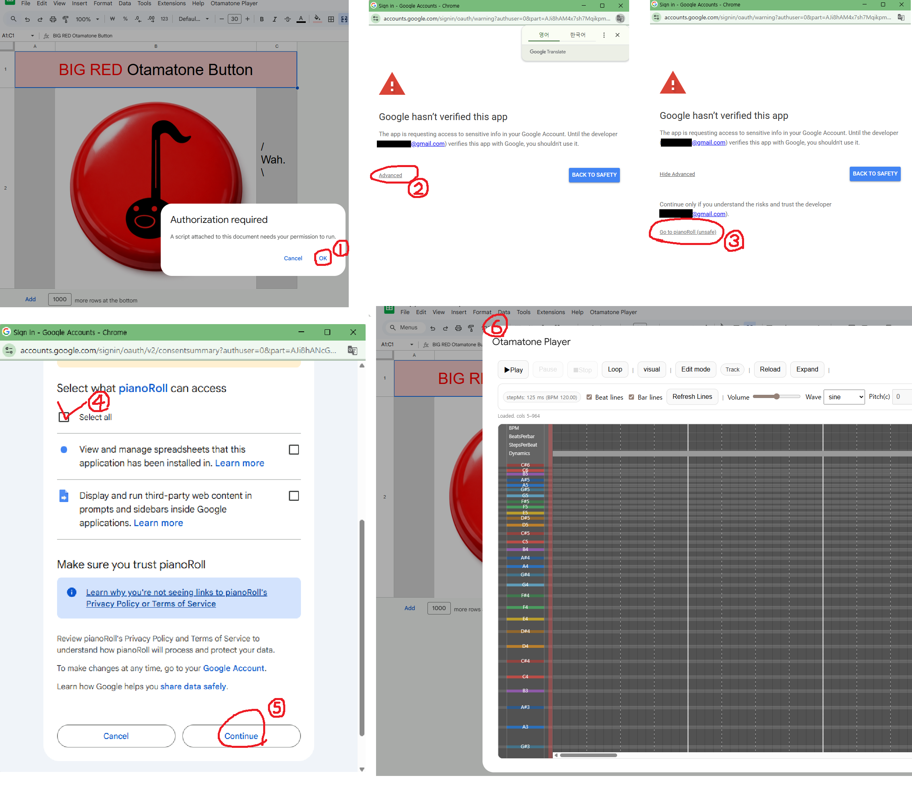 | 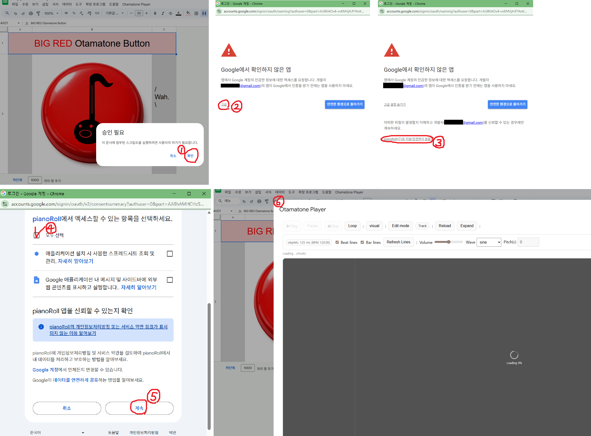 | |||
7 | |||||
8 | 4. Otamatone Player The program for playing and editing the actual score. It provides various features to support that workflow. | 4. Otamatone Player 실제 악보의 재생 및 편집을 담당하는 프로그램. 그를 위한 각종 기능을 지원하고 있습니다. | |||
9 | 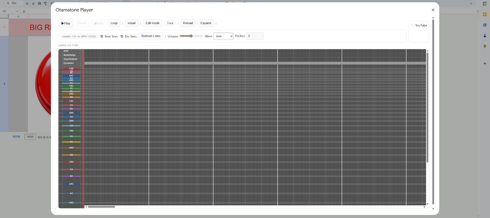 | ||||
10 | 4.1. Feature: Playback Group · Play / Pause / Stop: Basic controls for playback. · Loop: Set a loop range 1) Open the Loop panel and turn the button ON. 2) Select Select Start Column, then click the desired column on the score canvas to set the start point. 3) Select Select End Column, then click the desired column on the score canvas to set the end point. 4) When you play, it will loop within the range marked by the purple lines. * The Loop button is automatically turned OFF when Edit Mode is enabled. * Even while Loop is OFF, the previously set values are kept/saved. |  | 4.1. 기능 : 재생 그룹 · Play, Pause, Stop : 재생을 위한 기본 기능들 · Loop : 루프 구간 설정 1) 루프 패널을 열어서 버튼을 ON으로 합니다. 2) Select Start Column 선택 후 악보 캔버스에서 원하는 열을 클릭해 시작 시점을 결정합니다. 3) Select End Column 선택 후 악보 캔버스에서 원하는 열을 클릭해 종료 시점을 결정합니다. 4) 이후 재생하면 보라색 선 구간 안에서 루프합니다. * 루프 버튼은 에딧 모드 활성화시 자동으로 OFF됩니다. * OFF 상태에서도 기존에 설정한 값은 저장됩니다. | 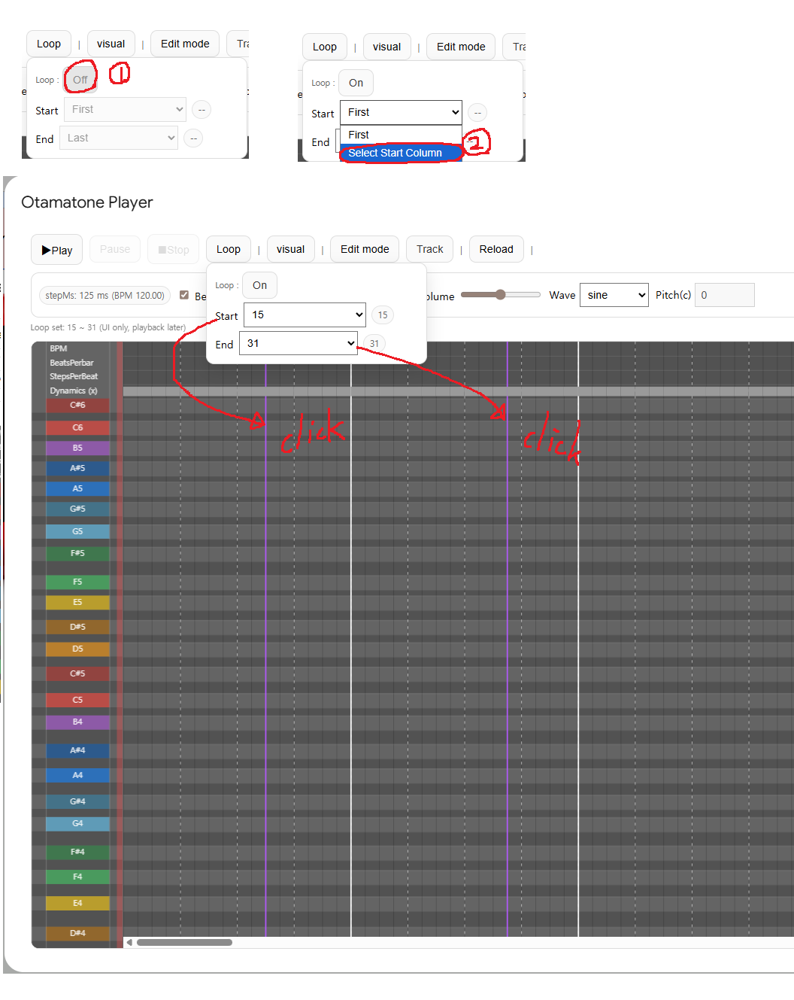 | |
11 | 4.2. Feature: Visual Group · Fullscreen: Full-screen mode. Exit with Esc, or click the X button that appears when you move the cursor to the top of the screen. · Fit height: Resize the score canvas to fill the window height. · NORMAL ↔ REVERSE: Flip the score vertically / restore to normal. · UI: Light ↔ Dark: Switch the UI theme. · Zoom sidebar: Zoom in/out the canvas. · Speed sidebar: Increase the horizontal width of cells to make the playback/scrolling feel faster. · Comment sidebar: Adjust the font size of comment text. · Text off checkbox: Hide all text displayed above notes. | 4.2. 기능 : 시각 그룹 · Fullscreen : 전체화면. esc 또는 커서를 화면 상단에 댈 시 뜨는 x버튼으로 종료 가능. · Fit height : 악보 캔버스가 창을 꽉 채우도록 크기를 조정 · NORMAL ↔ REVERSE : 악보 상하반전 / 원상복구 · UI: Light ↔ Dark : UI 테마 변경 · Zoom 사이드바 : 캔버스를 확대/축소 조절 가능 · Speed 사이드바 : 셀의 가로 길이를 늘려 체감 속도 상승 · Comment 사이드바 : 주석 텍스트의 폰트 크기 조절 · Text off 체크박스 : 노트 위에 뜨는 모든 텍스트 숨김 | |||
12 | 4.3. Feature: Edit Mode [Concept] - The ROLL sheet is a grid structured as time (columns) × pitch (rows). - Each cell contains note information. - Note information can include not only basic text but also pitch + performance/expression rule symbols (syntax). - Edit Mode combines these texts to build note information, then writes/updates it directly into cells in the ROLL sheet. 0) Basic Input - Click a cell in a note row on the score canvas: left-click adds a note. - Repeated left-clicks on the same cell cycle the content: current text → long-note symbol “-” → vib long-note symbol “~” → current text → ... - Right-click to delete. - Drag to apply notes to the entire dragged range at once. 1) Number - Used to change BPM, beatsPerBar, stepsPerBeat, and Dynamics. - After setting a value, clicking the BPM / beatsPerBar / stepsPerBeat / Dynamics rows at the top of the score area will enter that number. - Only numeric values are allowed. - For BPM and Dynamics, you can append “<”, “>”, or “><” to create gradual changes. Example) If you have BPM : 120< … 90>, the tempo gradually slows down from 120 to 90 (ritardando). | 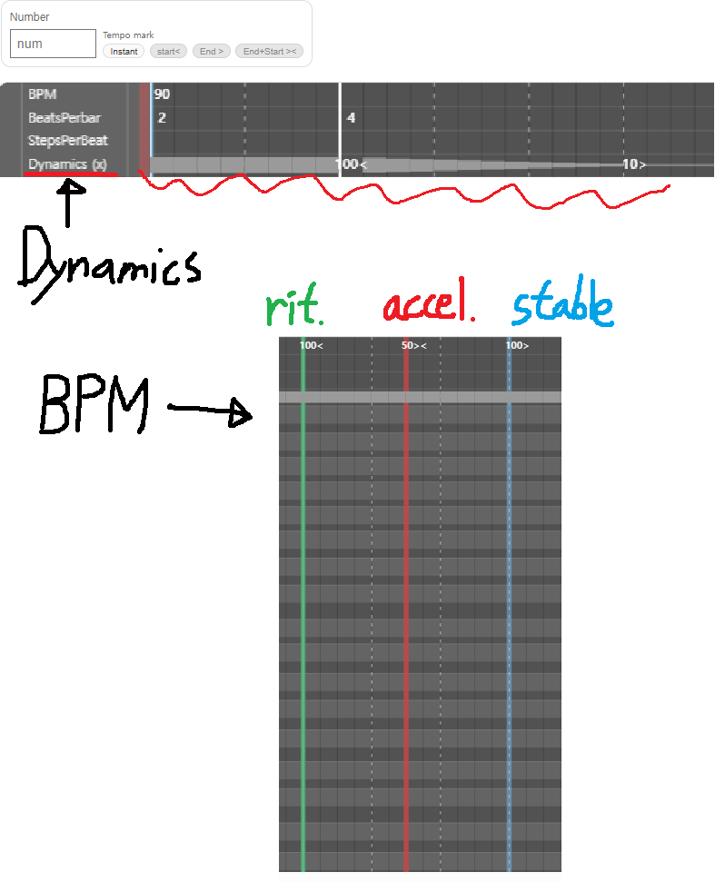 | 4.3. 기능 : 에딧 모드 [원리] - ROLL 시트는 시간(열) × 음 높이(행)의 그리드 구조입니다. - 셀에는 음의 정보가 입력됩니다. - 음의 정보에는 기본 텍스트 외에도 음높이 + 연주/표현 규칙 기호(문법)가 들어갑니다. - 에딧 모드는 텍스트들을 조합하여 음의 정보를 완성하고, ROLL 시트의 셀에 직접 입력, 업데이트합니다. 0) 기본 입력 - 악보 캔버스의 노트 행에서 한 칸을 클릭 : 좌클릭으로 노트 추가 - 같은 칸을 연속 좌클릭하면 : 현재 문자 -> 롱노트 기호 "-" -> 바이브 롱노트 기호 "~" → 현재 문자 →... - 우클릭으로 삭제 가능 - 드래그하면 드래그한 범위 전체에 노트가 일괄적으로 입력됨 1) Number - BPM, beatsPerBar, stepsPerBeat, Dynamics 변경에 사용 - 값을 설정 후 악보 영역 상단의 BPM / beatsPerBar / stepsPerBeat / Dynamics 행 클릭시 숫자 입력됨 - 숫자 이외의 값은 입력 불가 - BPM, Dynamics의 경우 "<" ">" "><" 기호를 붙여 점진적 변화를 구현 가능. ex) BPM : "120<" ... "90>"이면 120에서 90으로 점진적으로 느려짐 (리타르단도) | 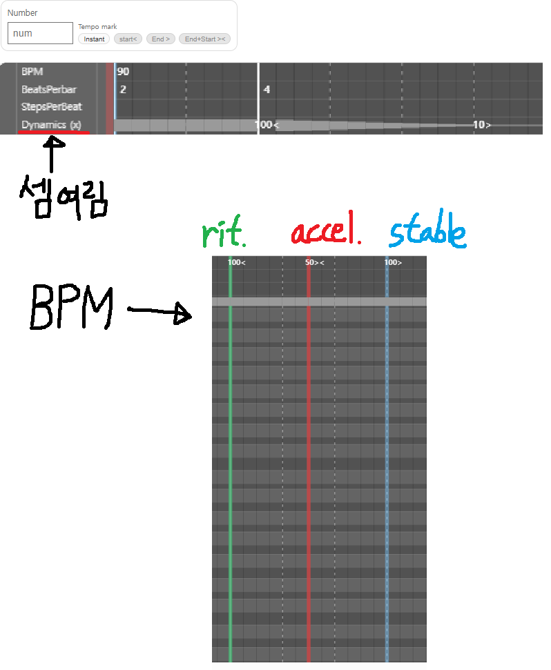 | |
13 | 2) Default - Sets the text used for the most basic input. - AUTO＃ / AUTO♭ : Automatically writes English note names onto notes. - CUSTOM : Defines the character(s) to input via the text box on the right. Spaces are allowed. - comment : A comment. Writes text into the score without any note. - ERASER : An eraser for special cases where right-click is not available. - From here, the options add performance/expression symbols. - Different symbols can be combined (except combinations that are musically difficult to coexist). 3) Long - Adds the long-note (legato) symbols “-” / “~” to the input text. - “-”: Normal long note - “~”: Long note with vib 4) Gliss. - Adds glissando markers “○”, “◐”, “●” to the input text. - For convenience, after placing “●” (which indicates the end of a glissando), the Gliss button is automatically turned OFF. - Each marker is connected with the nearest marker to the left or right with priority. - If multiple markers are placed in the same column, only one is recognized. 5) Trem. - Adds the tremolo symbol “ⓣn” to the input text. - The number after T(ⓣ) indicates how many subdivisions are played within a single step. - Trem cannot be combined with the vib symbol “~”. If both are present, only vib is interpreted. |  | 2) Default - 가장 기본적인 입력에 필요한 텍스트 결정. - AUTO＃ / AUTO♭ : 자동으로 노트에 영어 계이름 입력. - CUSTOM : 오른쪽 입력창을 통해 직접 입력할 문자를 결정. 공백 가능. - comment : 주석. 음이 없는 글자만을 악보에 입력합니다. - ERASER : 우클릭이 불가능한 특수한 상황을 위한 지우개. - 아래부터는 연주/표현법을 추가하는 기능입니다. - 서로 다른 기호간의 조합도 가능합니다. (음악적으로 공존하기 어려운 것은 제외) 3) Long - 롱노트 (레가토) 연결을 위한 기호 "-" "~"을 입력 텍스트에 추가합니다. - "-" : 일반 롱노트 - "~" : 바이브가 들어간 롱노트 4) Gliss. - 글리산도를 위한 기호 "○" "◐" "●" 기호를 입력 텍스트에 추가합니다. - 편의를 위해 글리산도의 끝을 의미하는 "●"를 악보에 입력하고 나면 자동으로 Gliss 버튼은 OFF됩니다. - 각 기호는 좌우로 가장 가까이 있는 마커와 우선 연결됩니다. - 같은 열에 여러개의 마커를 중복 설치할 경우 하나만 인식합니다. 5) Trem. - 트레몰로를 위한 기호 "ⓣn"을 입력 텍스트에 추가합니다. - T(ⓣ) 뒤의 숫자는 한 step을 몇개로 쪼개서 연주할지를 의미합니다. - Trem과 바이브 기호 "~"의 조합은 불가능하며, 조합시 바이브만 해석합니다. | 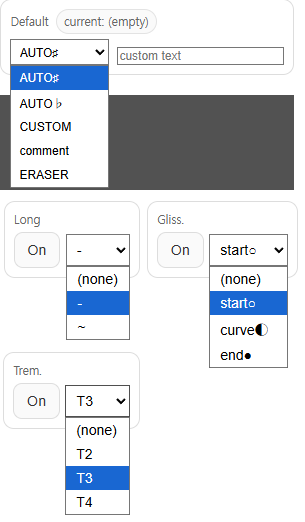 | |
14 | 6) Tuplet - Supports tuplets from triplets to septuplets (3–7 notes). - While Tuplet mode is ON, you can input only tuplets. ① Enable the SELECT ROW button. ② Click a row on the score canvas; the pitch of that row is recorded into the active input slot (highlighted with a yellow border). ③ Click another input slot to activate it and repeat the same process. * If Default / Long / Gliss / Trem is set, those symbols are also added to each tuplet slot. * If you create an (empty) slot using right-click or ERASER, that subdivision is treated as a rest. ④ After setting all subdivision values, click Finalize Value to confirm. Then click a point on the score to place the triplet. ⑤ In Tuplet mode, double-click a cell to create the tuplet-only long-note symbol “-/3”. You can append it after the tuplet head to extend the length as needed. ⑥ When you are done inputting the triplet, turn Tuplet mode OFF. - Once a triplet is placed, you can easily change pitches in Tuplet mode by clicking and dragging each subdivision rectangle. | 6) Tuplet - 셋잇단~7잇단 입력을 지원합니다. - Tuplet 모드가 ON인 상태에서는 오직 잇단음만 입력 가능합니다. ① SELECT ROW 버튼을 활성화합니다. ② 악보 캔버스에서 특정 행을 클릭하면 활성화된(노란 테두리) 입력칸에 그 행의 음이 기록됩니다. ③ 다른 입력칸을 클릭해 활성화시킬 수 있습니다. 같은 과정을 반복합니다. * Default, Long, Gliss, Trem을 설정했을 시 셋잇단의 슬롯에 해당 기호도 같이 추가됩니다. * 우클릭, ERASER로 (empty) 슬롯을 만들었을 시 그 분할음은 쉼표로 간주됩니다. ④ 모든 분할음의 값을 정했으면, Finalize Value 버튼을 클릭해 확정합니다. 이후 악보의 한 점을 클릭해 셋잇단을 입력합니다. ⑤ 셋잇단 모드에서 셀을 두번 클릭하면 잇단음표 전용 롱노트 기호 "-/3"을 만들 수 있습니다. 잇단음표 머리 뒤에 이어붙여 원하는 길이만큼 연장 가능합니다. ⑥ 셋잇단의 입력이 완료되었으면 Tuplet 모드를 OFF로 합니다. - 한번 설치된 셋잇단은 셋잇단 모드에서 각 분할음 사각형을 클릭 후 드래그하면 쉽게 음높이를 이동시킬 수 있습니다. | |||
15 | [Guide Video] https://drive.google.com/file/d/1IjLL9MoukKmpR9DS-sPLPlua4wgLM4xy/view?usp=drive_link | 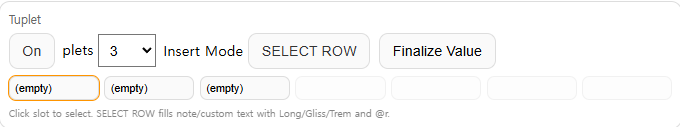 | [시연 영상] https://drive.google.com/file/d/1IjLL9MoukKmpR9DS-sPLPlua4wgLM4xy/view?usp=drive_link | ||
16 | 8) Edit Actions - Provides functions to undo changes or save them. ① Undo : Revert changes (supports up to 7 steps from the most recent change). ② Apply edits : Save/apply the changes to the ROLL sheet. ③ Clear Edits : Discard all changes (cancel all edits). | 8) Edit Actions - 수정 취소, 또는 저장 기능을 지원합니다. ① Undo : 뒤로가기, 최신 변경으로부터 7번까지만 지원. ② Apply edits : 변경사항을 ROLL 시트에 저장 ③ Clear Edits : 모든 변경 취소 | 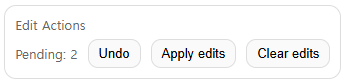 | ||
17 | 4.4. Track - The player supports three track layers. - The intended purpose of each track is described below, but you are free to use them in any way you like. ① basic: The main melody line ② optional: A line you can follow optionally, such as chords, a second voice, or session/instrument parts ③ extra: Optional elements that are especially difficult - You can enable/disable each track using the track buttons. Disabled tracks are shown semi-transparently on screen, and they are muted during playback. - Note: In Edit Mode, notes are written only to the currently active track. - The optional and extra tracks allow only one note per time position (column). (You cannot place two or more notes in the same column.) | 4.4. Track - 3개의 트랙 레이어를 지원합니다. 기본적인 제작 목적은 아래와 같으나, 원하시는대로 자유롭게 사용 가능합니다. ① basic : 기본 멜로디 라인 ② optional : 화음/2성부/세션 등 선택적으로 따라할 수 있 라인 ③ extra : 선택 요소 중 난이도가 특히 높은 라인 - 버튼을 눌러서 각 트랙을 활성화/비활성화할 수 있습니다. 비활성화된 트랙은 화면에서 반투명 처리되며, 재생 시 소리가 나지 않습니다. - 주의 : 에딧 모드에서 노트 입력시 현재 활성화된 트랙에만 노트가 기록됩니다. - optional, extra 트랙은 한 시점(열)에 한 개의 노트만 입력할 수 있습니다. (같은 열에 2개 이상의 노트 입력 불가) | |||
18 | |||||
19 | 4.5. Reload, Expand 1) Reload: Refresh. Reloads the latest score data from ROLL/CONFIG. 2) Expand - If you run out of space while editing, you can extend the canvas to the right. - However, there must already be enough space available in the ROLL sheet. In other words, you may need to expand/adjust the ROLL sheet itself first. | 4.5. Reload, Expand 1) Reload : 새로고침. 악보(ROLL/CONFIG)의 최신 내용을 다시 불러옵니다. 2) Expand - 악보를 편집할 공간이 부족할 때 캔버스를 오른쪽으로 확장할 수 있습니다. - 단, ROLL 시트에 충분한 공간이 이미 만들어져 있어야 합니다. 다시 말해 ROLL 시트에서 직접 조정이 필요합니다. | |||
20 | 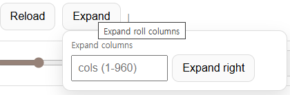 | ||||
21 | 4.6. Other Supporting Features ① Displays the current time per step and BPM. ② Beat Lines / Bar Lines: Shows beat/bar guides as thin/thick vertical lines. ③ Refresh Line: Refreshes the beat/bar lines. Redraws the lines to match the updated timing settings in Edit Mode. ④ Volume / Wave / Pitch: Audio playback options. The modified Pitch is saved to the ROLL sheet when you click Apply edits. | 4.6. 기타 지원 기능들 ① 현재의 스텝당 할당 시간, BPM을 표시합니다. ② Beat Lines, Bar Lines : 박/마디 기준선을 얇은/굵은 세로선으로 표시합니다. ③ Refresh Line : 박자선 새로고침. 에딧 모드에서 수정된 박자에 맞게 선을 다시 그려줍니다. ④ Volume, Wave, Pitch : 소리 재생 관련 옵션. 변경된 Pitch는 Apply edits 버튼을 누르면 ROLL 시트에 저장됩니다. | |||
22 | 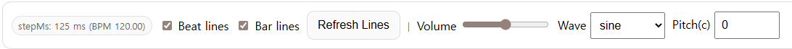 | ||||
23 | |||||
24 | 5. Youtube Player If a YouTube link is provided in the table on the ROLL sheet, you can play the corresponding YouTube video together with the score. · Offset: Adjusts the time difference between the video start and the score start in milliseconds (ms). Range: -60000 to 60000. - When the playback position changes, the video automatically seeks to the corresponding time. - Due to lag, synchronization may vary even under the same conditions. I recommend muting the score audio while using YouTube playback. | 5. Youtube Player ROLL 시트의 표에 유튜브 링크가 올라와있다면 악보와 동시에 해당 유튜브 영상을 재생할 수 있습니다. · Offset : 영상 시작 시점과 악보 시작 시점의 시차를 ms단위로 조절. -60000~60000 - 재생 위치가 변화하면 영상도 해당 시점으로 자동 이동합니다. - 렉으로 인해 동일 조건에서도 싱크에 오차가 생길 수 있습니다. 악보 쪽의 볼륨을 끄시고 플레이하시길 권장합니다. | |||
25 | 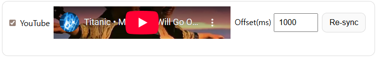 | ||||
26 | |||||